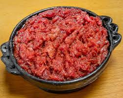

Kitfo

Home
Description
Kitfo is a traditional Ethiopian dish made from freshly minced raw beef, seasoned with mitmita (a spicy chili powder blend) and niter kibbeh (a clarified butter infused with herbs and spices). The dish is often compared to steak tartare but carries a distinctly Ethiopian flavor profile thanks to its rich, aromatic seasonings. Kitfo can be served raw (leb leb), lightly cooked, or fully cooked, depending on personal preference.
Traditionally, kitfo is enjoyed with injera (a soft, sour flatbread) or kocho (a fermented enset bread), and is often accompanied by mild cheese (ayib) and cooked greens (gomen). It's a celebratory meal, typically served during special occasions or holidays, reflecting Ethiopia's deep-rooted culinary culture. The combination of tender beef, spiced butter, and vibrant sides makes kitfo a flavorful and memorable experience.
Ingredients
- Freshly minced lean beef
- Mitmita (Ethiopian chili spice blend)
- Niter Kibbeh (Ethiopian spiced clarified butter)
- Salt (to taste)
- Ayib (Ethiopian cottage cheese, optional side)
- Gomen (cooked collard greens, optional side)
- Injera or Kocho (for serving)
Steps
- Start by finely mincing fresh, lean beef using a sharp knife or meat grinder.
- In a small pan, melt the niter kibbeh (spiced clarified butter) over low heat until warm.
- Add mitmita (Ethiopian chili spice) and a pinch of salt to the melted butter and stir well.
- Pour the spiced butter mixture over the minced beef.
- Mix thoroughly until the meat is evenly coated and seasoned.
- For lightly cooked (leb leb) kitfo, warm the mixture gently in a pan for a few minutes—do not overcook.
- Serve immediately with injera or kocho, along with sides like ayib (Ethiopian cottage cheese) and gomen (collard greens).